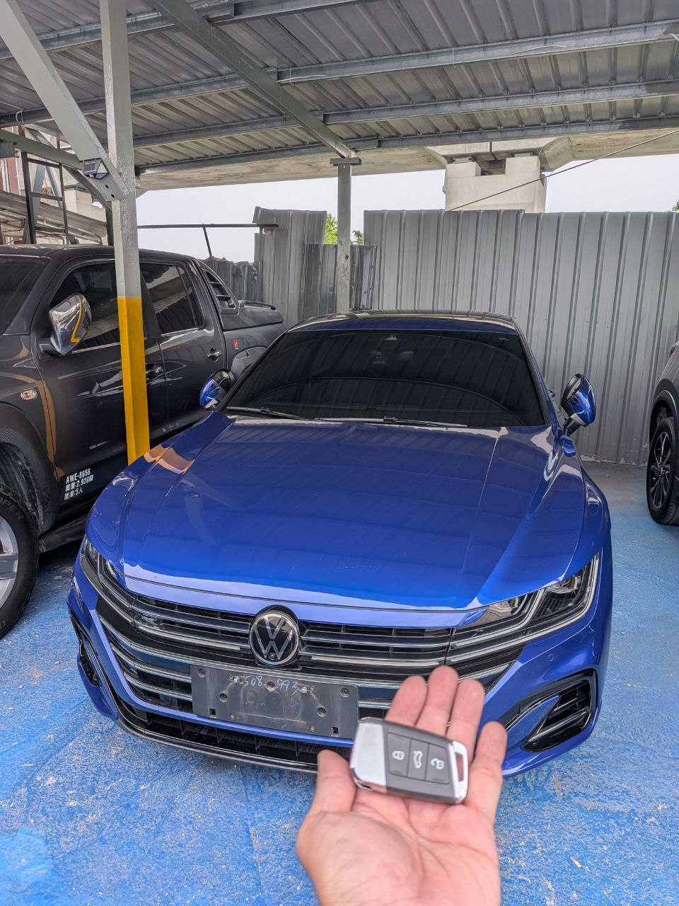
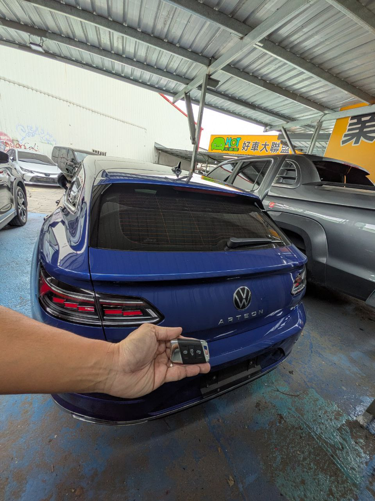

福斯（Volkswagen）旗艦跑旅 Arteon 以絕美線條著稱，其內在搭載的是德系工藝精華的 VAG 車系平台 車輛安全架構。今日接獲車主委託，為其車輛進行第二把智慧感應鑰匙的新增配製。
VAG 車系平台 系統的車輛安全邏輯
VAG 車系平台的車輛安全系統具備高度數位加密特性，每一把鑰匙的授權都需經過車輛電腦與鑰匙晶片的雙向認證。極致核心技術團隊運用原廠級設定設備，在不影響原車設定的前提下，安全完成密鑰授權。
Mission Summary
- ● 車型：VW Arteon
- ● 平台：VAG 車系平台 進口車車輛安全架構
- ● 狀況：智慧感應鑰匙新增 (Key Adding)
- ● 技術：現場 車輛端資料確認 車況確認與同步設定
Emergency Support